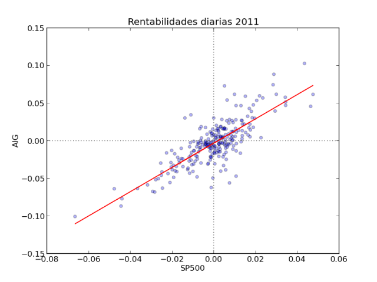

Según el modelo CAPM, la beta representa el riesgo sistémico de un activo, es decir, aquel que no puede reducirse diversificando. Mide la sensibilidad de la rentabilidad de un activo con la rentabilidad del mercado. Por ejemplo, si una acción tuviera una beta de 2, significaria que la rentabilidad de dicha acción es "de media" el doble que la rentabilidad del mercado (tanto en sentido positivo como negativo).
Gráficamente corresponde a la pendiente de la linea de regresión calculada entre las rentabilidades de dicha acción con las rentabilidades de un índice de referencia, por ejemplo, el IBEX35 o el S&P500 para una acción americana.
La linea de regresión entre las rentabilidades (Security characteriric line) esta definida por:
$$r_i = \alpha_i + \beta_i\cdot r_m + \epsilon_i$$
En python podemos estimar fácilmente una linea de regresión con el método linregress del paquete scipy.stats e ilustrarla en un bonito gráfico con matplolib. Por ejemplo, la beta calculada con datos diarios de AIG en 2011 fue de 1.61

import datetime as dt
from pandas.io.data import DataReader
import scipy.stats as stats
import matplotlib.pyplot as plt
# Descarga datos de ejemplo
AIG = DataReader('AIG', 'yahoo', start = dt.datetime(2011,1,1),
end = dt.datetime(2011,12,31))
SP500 = DataReader('^GSPC', 'yahoo', start = dt.datetime(2011,1,1),
end = dt.datetime(2011,12,31))
# Calcula las rentabilidades diarias
AIG['ret'] = AIG['Adj Close'].pct_change()
SP500['ret'] = SP500['Adj Close'].pct_change()
# Calcula los coeficientes de la regresión
(BETA, ALPHA, R, P, SE) = stats.linregress(SP500.ret.dropna(),
AIG.ret.dropna())
# Informe de la regresión
print 'Beta: %4.2f\nR2: %4.2f' %(BETA, R**2)
# Gráfico de regresión
plt.scatter(SP500.ret, AIG.ret, alpha=0.3)
plt.plot(SP500.ret, ALPHA + BETA \* SP500.ret, color = 'r')
plt.axvline(ls = ':', color = '0.2')
plt.axhline(ls = ':', color = '0.2')
plt.title('Rentabilidades diarias 2011')
plt.xlabel('SP500')
plt.ylabel('AIG')
plt.show()
Comments
comments powered by Disqus